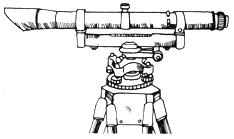

Though I myself am not yet ready to go back to the land, I've enjoyed MOTHER over the last year and have learned a good deal from her. Since I'm a student of civil engineering-a field I've left to teach woodworking-I follow the articles on alternative housing and construction with special interest. Which brings me to the subject of "Surveying for the Homestead" by Aimee Gelwick (MOTHER NOS. 34 and 35).
I should mention, first of all, that I was fortunate enough to attend a special school-Brooklyn Technical High, which is designed to prepare engineers-to-be for higher education-and studied surveying there for two years. In college I took specialized, advanced training in the same subject.
And what was the outcome of all that study? When I was done with school and ready to go to work, the only surveying job I could get was that of "rodman" . . . the helper who holds the "stick" for the person using the "machine" (transit or level). You see, even after my considerable exposure to the field, no one would hire me to operate the instruments myself. True, I'm here in the Big Apple-where building lots are measured in hundredths of a foot-but perhaps what I've said will suggest to you how much skill and proficiency are required to use surveying equipment.
While Aimee's article does contain certain technical errors and omissions, its main fault is that it presents surveying as if there really weren't much to the craft. This approach is, I believe, unfair to MOTHER's readers.
For example, take the following sentence in the section on "Elevations": "The next step is to level the sighting instrument on its tripod." It's one thing to read this, and quite another to go out and do it for the first time with nobody standing by to instruct you. Just this single operation requires patience, dexterity, sensitivity, and a great deal of practice. An amateur's attempt would, I dare say, take hours (even if the screws didn't become jammed). The layman would be far better advised to use a level made by filling a garden hose with water.
I have similar doubts about a beginner's ability to operate a transit. Get hold of one, if you don't believe me, and see if you can find the upper and lower clamps referred to in the article. I'm certain that-if you ain't never been "showed"-you won't be able to set up the instrument and level it over a point.
There's also a good chance that the instruments would be damaged or thrown out of adjustment by inexperienced handling. These machines are expensive and sensitive, and even a small jar could knock the alignments off . . . after which you might struggle along for days, wondering why you couldn't close the run.
I'll be happy to supply additional information if MOTHER wants it . . . but surveying is one of those skills that's best learned by doing, with someone who knows standing next to you.
I hope, for my own sake and that of my fellow readers, that other information I absorb from MOTHER isn't as simplistically presented as the instructions in this article.
In closing, I'd like to comment on one technical point. A note with Fig. 10, which shows the process of leveling a foundation, states that the level must be placed far enough away to allow sighting of the tops of the stakes used as markers. This might not be possible (if the house site were on top of a rise, for instance) . . . especially when you consider that the farther the instrument is from the object to be sighted, the greater the error in the results. Aimee solves the problem by suggesting that a target rod be set on the stake. That's fine, but you could easily position the level in the center of the foundation-the best location-and still get readings. It's just a matter of determining the height of the instrument (H.I.) and comparing the heights of the corners by simple subtraction. If you're taking the reading from a stake, sight a mark on its side instead of worrying about the exact elevation of the top.
Well, I could go on, but I won't. Please remember that I have no vested interest in the surveyor's profession . . . I just want to keep people from tackling land measurement with the notion that it': as easy as Aimee's article suggests.
After 20 years in surveying, I feet qualified to tear a few holes in s in Aimee Gelwick's articles on the subject (MOTHER NOS. 34 and 35). I'll begin with some comments on the measurement of distance.
First of all, you don't need chaining pins for this process . . . they're more bother than they're worth. Any small-headed nail does just as well. Simply clean off a patch of ground where the taped distance falls and stick in the marker at that point.
You do, however, need plumb bobs, one for each chainman. Level chaining is possible only on a flat street, road, or ballpark . . . never in the woods, never even in a pasture.
About the chaining tape: Aimee mentions that the measure's first foot is divided into tenths. On any such equipment I've used, that initial twelve inches has been marked off in hundredths. (Incidentally, I see no reason to tape 56.3 feet in separate units of 50 and 6.3, as the author suggests. Why not just cover the whole distance at once?
Before I move on, I'll just mention a few other miscellaneous matters covered in Part I of the article. [1] The elaborate note-taking described on page 91 of MOTHER NO. 34 isn't necessary unless 'the survey is to be placed on record. Also, in the same paragraph, Ms. Gelwick mentions "elevations from range pole readings". There's no way to determine elevations from a range pole . . . you must use a leveling rod.
[2] That instrument in the photo on the same page is a wye level, not a dumpy (which is shown, correctly labeled, in Fig. 8 of Part II). The difference is that the wye's telescope can be removed from its standards, while the dumpy's can't.
[3] According to the author, surveying instruments can be rented by laymen. Though I've never tried to do so, I'm willing to bet that anyone who does will have to put down a good-sized deposit. Such machines aren't playthings and they can be damaged quite easily.
Now to some remarks on Part II. To begin with, I can't say much for Aimee's way of leveling a footing. If the site were on a hillside, she might need awfully long stakes . . . and the string is quite unnecessary.
Another note on leveling: You don't need a tape for this process unless you're cross-sectioning or running a profile (a vertical section through an area to show elevations and depressions). I've performed both those operations with a tape, a 2-foot carpenter's level, a 5-foot stick, and a 6-foot folding rule.
Now a word on the use of the transit. All angles should be turned to the right-as follows-to ensure accuracy: Take the first reading and leave it in the gun. Then turn the same angle twice more, note the third result, and divide the figure by 3. This should give you a mean close to the first reading . . . and if it doesn't, you did something wrong.
You can, of course, turn angles as often as needed for accuracy. It's really best to do so six times, reading the first, third, and sixth . . . then six more times, reading the ninth and twelfth. This method cancels out any error in the instrument.
Incidentally, the stations used in transit work are not bench marks, as Aimee says. A bench mark is a position marked with an elevation, and most geodetic monuments aren't of this type.
I should also point out that there's no use in writing to the U.S. Coast and Geodetic Survey for land measurement information. The only data available from that source are the geodetic positions of monuments, and when you'd found one such marker you probably wouldn't be able to see the next (since most of the Survey's work is done from towers).
If I seem to be carping over small matters, it's because I feel strongly about keeping up high standards in my field. A crew I led ran a line for a ground control approach at Andrews Air Force Base in Maryland, and that survey would close within a foot in 200 miles. A lot more goes into such results than could be picked up from an article like Ms. Gelwick's. I realize that Aimee's instructions were intended for use by the landowner on his own place . . . but even at that level it's possible to be more accurate.
As you'd probably expect, I don't think much of the method suggested by Dave Beiter in MOTHER NO. 35. I wouldn't even call it surveying . . . it's more like walking through the woods with a compass.
I've often seen work of this kind (including one effort-by a surveyor-which contained a single acre and followed the same line four times for a distance of 208.77 feet). Sometimes I've tried to go over a boundary laid out by crude methods, and returned after a weekend to find that the fellow who carried out the first run had tracked my lines through the woods and marked them with rags tied to trees.
Dave's work may be passable in Kentucky, but could make trouble even there. Property lines which cross themselves can mean that three or four people end up paying taxes on the same land . . . and all, of course, claim ownership. I wouldn't like to be in Mr. Beiter's shoes if his neighbors start suing him for bad surveys (which might happen, especially if strangers begin to settle in the area).
To sum up: It's true that a knowledge of surveying is very useful . . . but there's far more to the skill than Aimee and Dave suggest, and the layman who wants to learn the basics had better find an expert to teach him.
|
 |
|
|